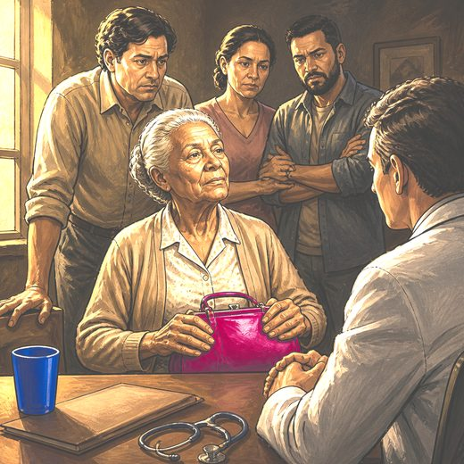

Consulta rápida à beira do leito
Condutas, doses e interações.
Referências da aula · 8
- Chang YK, Philip J, van der Steen JT, et al. Referral criteria for specialist palliative care for patients with dementia: an international Delphi consensus. JAMA Netw Open. 2025;8(5):e2510298. doi:10.1001/jamanetworkopen.2025.10298.DOI
- Beauchamp TL, Childress JF. Principles of Biomedical Ethics. 8th ed. New York: Oxford University Press; 2019.
- Potter VR. Bioethics: Bridge to the Future. Englewood Cliffs: Prentice-Hall; 1971.
- National Commission for the Protection of Human Subjects of Biomedical and Behavioral Research. The Belmont Report. Washington, DC: Department of Health, Education, and Welfare; 1979.
- Jonsen AR, Siegler M, Winslade WJ. Clinical Ethics: A Practical Approach to Ethical Decisions in Clinical Medicine. 8th ed. New York: McGraw-Hill; 2015.
- Appelbaum PS. Assessment of patients' competence to consent to treatment. N Engl J Med. 2007;357(18):1834-40. PMID 17978292. doi:10.1056/NEJMcp074045.PubMedDOI
- Conselho Federal de Medicina. Código de Ética Médica: Resolução CFM nº 2.217, de 27 de setembro de 2018. Brasília: CFM; 2019.
- Brasil. Lei nº 10.741, de 1º de outubro de 2003. Dispõe sobre o Estatuto da Pessoa Idosa.
Documentos oficiais
Leis e publicações do Ministério da Saúde sobre o cuidado da pessoa idosa, de acesso livre.
Abrir os documentos